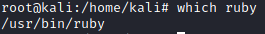
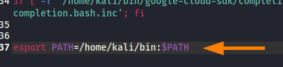
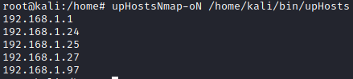

Create a script with ruby
1. Add the shebang at the beginning of the script. The shabang is the directory that holds the ruby executable in our system:
#!/usr/bin/ruby 2. set executable permissions on the script. This can be done with chmod.
3. Now we can execute the script without the need to use the Ruby command before the name of the file
./ before the name of the script will execute it
If we want the script available as a system command In this way we can call the script wherever we are in the system directories
4. Since we want to treat the script as a command, let us omit the extension
script.rb →
script5. Add the folder that contain the
script to the PATH environment variable of the root user. To do that we need to edit
.bashrc $ cd /root
$ pwd
$ gedit .bashrc
So if the path that contain the script is “
/home/kali/bin” then we need to add to the end of the .bashrc file:
export PATH=/home/kali/bin:$PATH 6. Reload the configuration of the .bashrc file
7. Execute script
